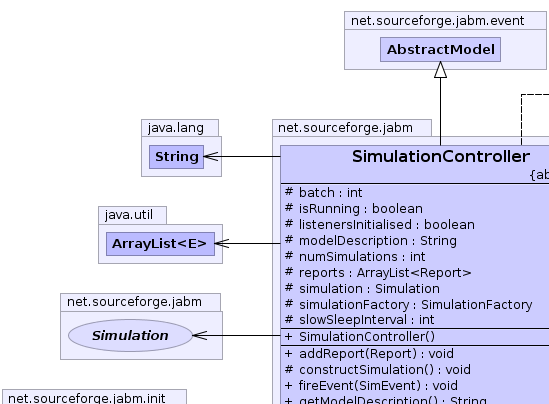
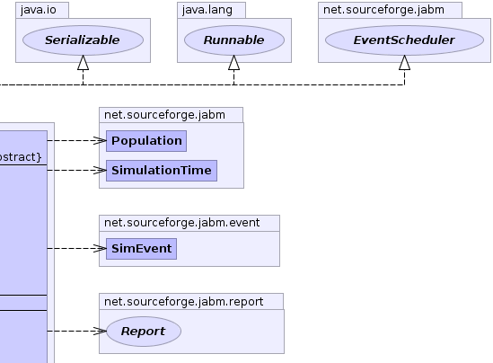
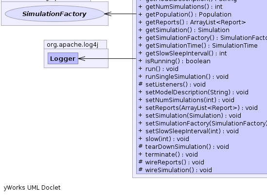

net.sourceforge.jabm.event.AbstractModel
net.sourceforge.jabm.SimulationController
net.sourceforge.jabm.event.AbstractModel
net.sourceforge.jabm.SimulationController
|
|||||||||
| PREV CLASS NEXT CLASS | FRAMES NO FRAMES | ||||||||
| SUMMARY: NESTED | FIELD | CONSTR | METHOD | DETAIL: FIELD | CONSTR | METHOD | ||||||||
java.lang.Object
public abstract class SimulationController
The SimulationController is responsible for running a batch of one or more
independent Simulation runs. It is responsible for establishing the event
listening relationships between the different components of the simulation,
and is the container for all of the Report objects in the simulation.
|  |  |
|  |
| Field Summary | |
|---|---|
protected int |
batch
The index of the current simulation. |
protected boolean |
isRunning
|
protected boolean |
listenersInitialised
|
protected java.lang.String |
modelDescription
A human-readable description of the model that can be presented to the user of the model, e.g. |
protected int |
numSimulations
The total number of simulations to run. |
protected java.util.ArrayList<Report> |
reports
The reports that will collect data on the simulations. |
protected Simulation |
simulation
The underlying simulation. |
protected SimulationFactory |
simulationFactory
The simulationFactory is responsible for initialising the simulation at the beginning of each run. |
protected int |
slowSleepInterval
|
| Fields inherited from class net.sourceforge.jabm.event.AbstractModel |
|---|
deleteQueue, genericListeners, specificListeners |
| Constructor Summary | |
|---|---|
SimulationController()
|
|
| Method Summary | |
|---|---|
void |
addReport(Report report)
|
protected abstract void |
constructSimulation()
|
void |
fireEvent(SimEvent event)
|
java.lang.String |
getModelDescription()
|
int |
getNumSimulations()
Fetch the total number of simulations to run in this batch. |
Population |
getPopulation()
Fetch the Population of the current simulation. |
java.util.ArrayList<Report> |
getReports()
|
Simulation |
getSimulation()
|
SimulationFactory |
getSimulationFactory()
|
SimulationTime |
getSimulationTime()
Query the simulation time in the currently running simulation. |
int |
getSlowSleepInterval()
|
boolean |
isRunning()
|
void |
run()
Run the batch of simulations in sequence. |
void |
runSingleSimulation()
Run a single simulation. |
protected void |
setListeners()
Establish any listening relationships that are required prior to launching a new simulation. |
void |
setModelDescription(java.lang.String modelDescription)
|
void |
setNumSimulations(int numSimulations)
Configure the number of independent simulations to run as part of a Monte-carlo experiment. |
void |
setReports(java.util.ArrayList<Report> reports)
Configure the reports for this simulation. |
void |
setSimulation(Simulation simulation)
|
void |
setSimulationFactory(SimulationFactory simulationInitialiser)
Configure the initialiser for this simulation. |
void |
setSlowSleepInterval(int slowSleepInterval)
|
void |
slow(int slowSleepInterval)
Slow down the simulation by sleeping for the specified interval in between simulation steps. |
protected void |
tearDownSimulation()
Remove listeners prior to reconstructing the simulation object. |
void |
terminate()
Terminate all simulations. |
protected void |
wireReports()
Establish the listening relationships for Report objects. |
protected void |
wireSimulation()
Configure the listener relationships for the simulation object. |
| Methods inherited from class net.sourceforge.jabm.event.AbstractModel |
|---|
addListener, addListener, clearListeners, clone, notifyGenericListeners, notifySpecificListeners, processDeleteQueue, removeListener |
| Methods inherited from class java.lang.Object |
|---|
equals, finalize, getClass, hashCode, notify, notifyAll, toString, wait, wait, wait |
| Methods inherited from interface net.sourceforge.jabm.EventScheduler |
|---|
addListener, addListener, removeListener |
| Field Detail |
|---|
protected int batch
protected int numSimulations
protected java.util.ArrayList<Report> reports
protected Simulation simulation
protected SimulationFactory simulationFactory
protected boolean listenersInitialised
protected boolean isRunning
protected int slowSleepInterval
protected java.lang.String modelDescription
| Constructor Detail |
|---|
public SimulationController()
| Method Detail |
|---|
public void run()
run in interface java.lang.Runnablepublic void runSingleSimulation()
public SimulationTime getSimulationTime()
getSimulationTime in interface EventSchedulerpublic void fireEvent(SimEvent event)
fireEvent in interface EventSchedulerfireEvent in class AbstractModelpublic void terminate()
public Population getPopulation()
public java.util.ArrayList<Report> getReports()
public void setReports(java.util.ArrayList<Report> reports)
reports - Reportpublic void addReport(Report report)
public int getNumSimulations()
public void setNumSimulations(int numSimulations)
numSimulations - public Simulation getSimulation()
public void setSimulation(Simulation simulation)
public SimulationFactory getSimulationFactory()
public void setSimulationFactory(SimulationFactory simulationInitialiser)
simulationInitialiser - SimulationFactorypublic int getSlowSleepInterval()
public void setSlowSleepInterval(int slowSleepInterval)
public void slow(int slowSleepInterval)
slowSleepInterval - public boolean isRunning()
protected void setListeners()
protected void wireReports()
protected void wireSimulation()
protected void tearDownSimulation()
public java.lang.String getModelDescription()
public void setModelDescription(java.lang.String modelDescription)
protected abstract void constructSimulation()
|
|||||||||
| PREV CLASS NEXT CLASS | FRAMES NO FRAMES | ||||||||
| SUMMARY: NESTED | FIELD | CONSTR | METHOD | DETAIL: FIELD | CONSTR | METHOD | ||||||||